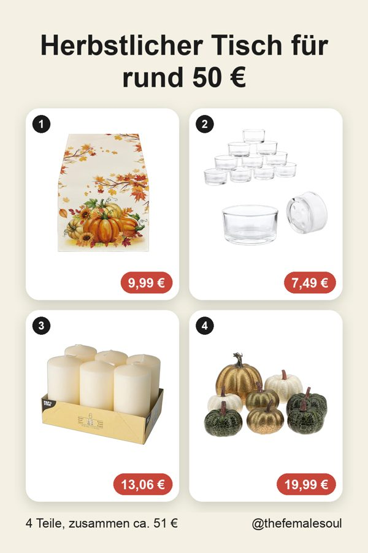
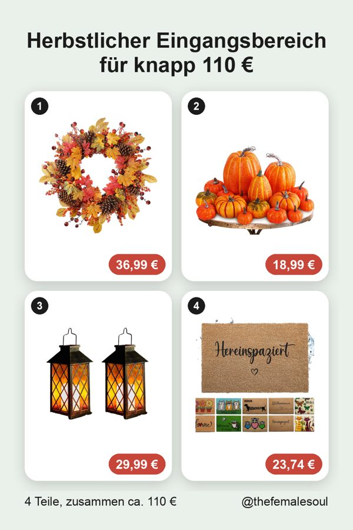
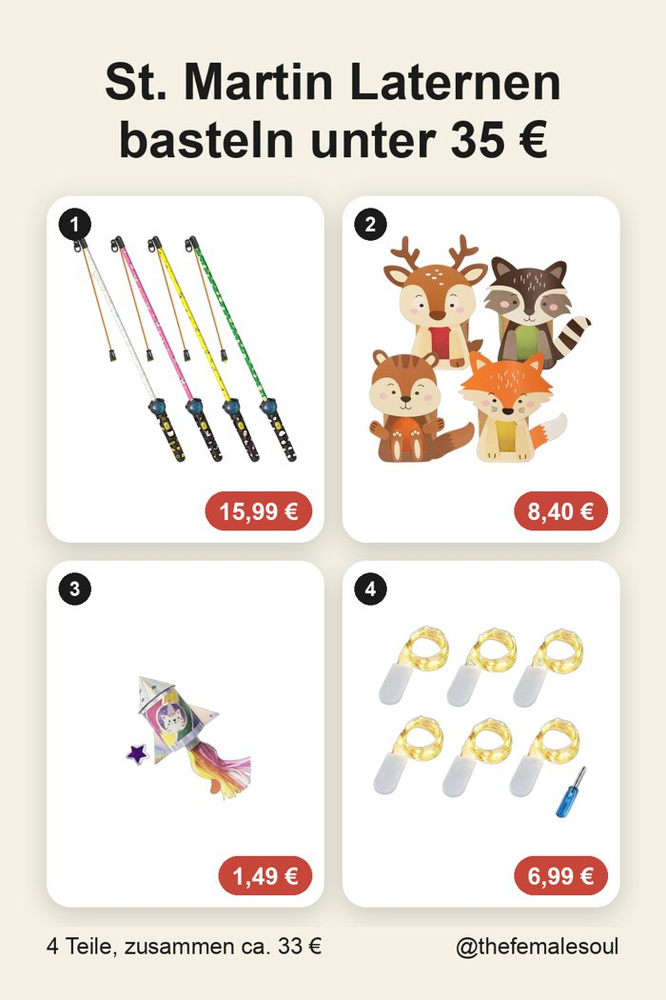
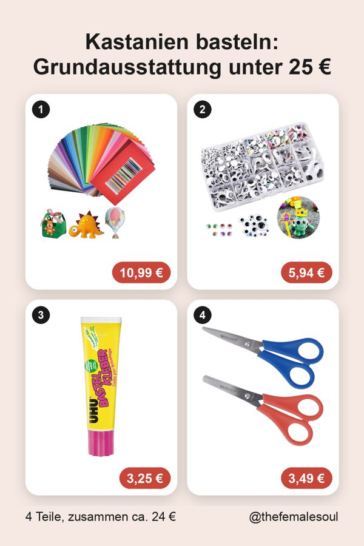

Herbstlicher Tisch für rund 50 €
Wenn draußen die Blätter fallen, wird der Esstisch zum gemütlichsten Platz im Haus. Mit diesen vier Teilen deckst du ihn für rund 50 € herbstlich ein, ganz ohne großen Aufwand. Hinweis: Du hast unter dem Auftrag auch das Python-Skript mit eingefügt, das solche Texte über `texte._claude` für alle Sets in `tage/260913/sets.json` erzeugt und nach `collagen.json` schreibt. Falls du das Skript ausführen oder anpassen möchtest, sag Bescheid.
Anzeige | Affiliate-Links

Die Produkte

Herbst Tischläufer
Kürbisse, Ahornblätter und Sonnenblumen auf 40 x 140 cm bringen sofort Herbststimmung auf einen Tisch für 2 bis 4 Personen und lassen sich bei 30 bis 40 °C waschen.

Teelichtgläser 18er Pack
Die kleinen Gläser aus dickem, klarem Glas streuen das Kerzenlicht sanft über den Tisch und sorgen für die gemütliche Atmosphäre, die zur kalten Jahreszeit gehört.

Stumpenkerzen creme
Die dezenten Kerzen in 6 x 11,5 cm setzen als Tischkerze oder im Windlicht einen ruhigen Akzent zwischen dem bunten Läufer und den Teelichtern.

Künstliche Kürbisse 8 Stück
Acht glänzende Kunstkürbisse in drei Größen sehen aus wie echt, lassen sich in Schüsseln oder Körben verteilen und halten die ganze Saison durch.
Hallo, ich bin Valeria
Mama, Deko-Fan und immer auf der Suche nach Dingen, die den Alltag schöner und leichter machen. Hier sammle ich meine Amazon Finds als fertige Ideen, damit du nicht stundenlang suchen musst.
Weitere Listen




